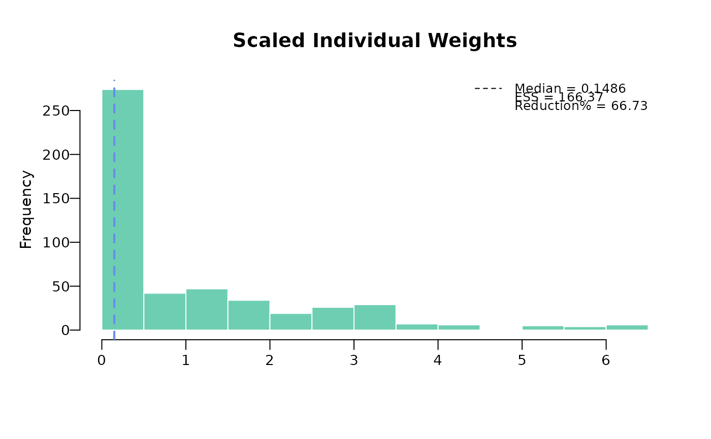
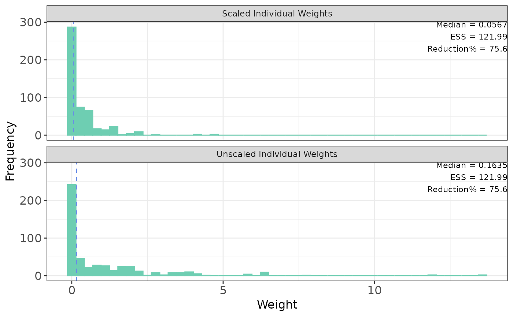

Assuming data is properly processed, this function takes individual patient data (IPD) with centered covariates (effect modifiers and/or prognostic variables) as input, and generates weights for each individual in IPD trial to match the covariates in aggregate data.
The plot function displays individuals weights with key summary in top right legend that includes
median weight, effective sample size (ESS), and reduction percentage (what percent ESS is reduced from the
original sample size). There are two options of plotting: base R plot and ggplot. The default
for base R plot is to plot unscaled and scaled separately. The default
for ggplot is to plot unscaled and scaled weights on a same plot.
Usage
estimate_weights(
data,
centered_colnames = NULL,
start_val = 0,
method = "BFGS",
n_boot_iteration = NULL,
set_seed_boot = 1234,
boot_strata = "ARM",
...
)
# S3 method for class 'maicplus_estimate_weights'
plot(
x,
ggplot = FALSE,
bin_col = "#6ECEB2",
vline_col = "#688CE8",
main_title = NULL,
scaled_weights = TRUE,
bins = 50,
...
)Arguments
- data
a numeric matrix, centered covariates of IPD, no missing value in any cell is allowed
- centered_colnames
a character or numeric vector (column indicators) of centered covariates
- start_val
a scalar, the starting value for all coefficients of the propensity score regression
- method
a string, name of the optimization algorithm (see 'method' argument of
base::optim()) The default is"BFGS", other options are"Nelder-Mead","CG","L-BFGS-B","SANN", and"Brent"- n_boot_iteration
an integer, number of bootstrap iterations. By default is NULL which means bootstrapping procedure will not be triggered, and hence the element
"boot"of output list object will be NULL.- set_seed_boot
a scalar, the random seed for conducting the bootstrapping, only relevant if
n_boot_iterationis not NULL. By default, use seed 1234- boot_strata
a character vector of column names in
datathat defines the strata for bootstrapping. This ensures that samples are drawn proportionally from each defined stratum. IfNULL, no stratification during bootstrapping process. By default, it is "ARM"- ...
Additional
controlparameters passed to stats::optim.- x
object from estimate_weights
- ggplot
indicator to print base weights plot or
ggplotweights plot- bin_col
a string, color for the bins of histogram
- vline_col
a string, color for the vertical line in the histogram
- main_title
title of the plot. For ggplot, name of scaled weights plot and unscaled weights plot, respectively.
- scaled_weights
(base plot only) an indicator for using scaled weights instead of regular weights
- bins
(
ggplotonly) number of bin parameter to use
Value
a list with the following 4 elements,
- data
a data.frame, includes the input
datawith appended column 'weights' and 'scaled_weights'. Scaled weights has a summation to be the number of rows indatathat has no missing value in any of the effect modifiers- centered_colnames
column names of centered effect modifiers in
data- nr_missing
number of rows in
datathat has at least 1 missing value in specified centered effect modifiers- ess
effective sample size, square of sum divided by sum of squares
- opt
R object returned by
base::optim(), for assess convergence and other details- boot_strata
'strata' from a boot::boot object
- boot_seed
column names in
dataof the stratification factors- boot
a n by 2 by k array or NA, where n equals to number of rows in
data, and k equalsn_boot_iteration. The 2 columns in the second dimension include a column of numeric indexes of the rows indatathat are selected at a bootstrapping iteration and a column of weights.bootis NA when argumentn_boot_iterationis set as NULL
Examples
data(centered_ipd_sat)
centered_colnames <- grep("_CENTERED", colnames(centered_ipd_sat), value = TRUE)
weighted_data <- estimate_weights(data = centered_ipd_sat, centered_colnames = centered_colnames)
# \donttest{
# To later estimate bootstrap confidence intervals, we calculate the weights
# for the bootstrap samples:
weighted_data_boot <- estimate_weights(
data = centered_ipd_sat, centered_colnames = centered_colnames, n_boot_iteration = 100
)
# }
plot(weighted_sat)

if (requireNamespace("ggplot2")) {
plot(weighted_sat, ggplot = TRUE)
}
